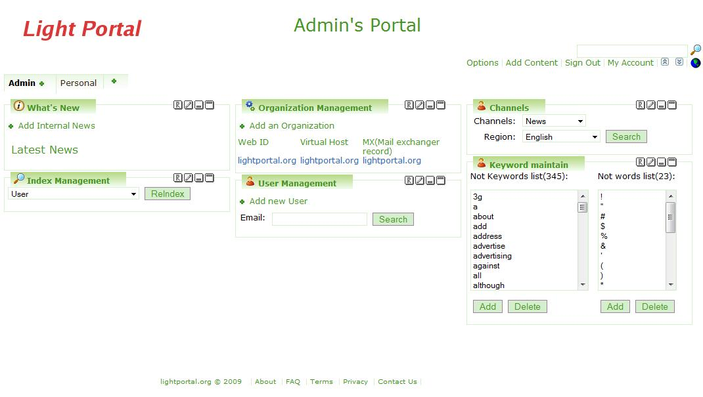
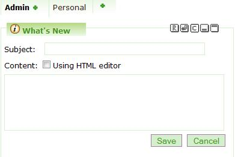
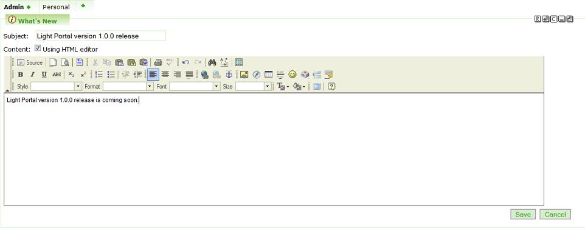
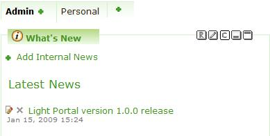
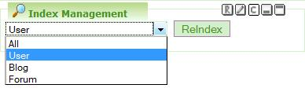
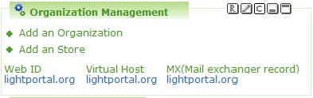
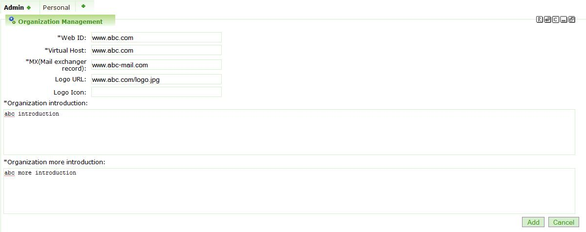
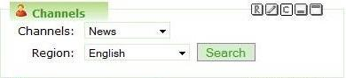
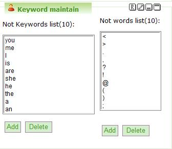

Light
Portal 1.0 Admin User Guide
Introduction
This
document
highlights and describes the usages of Light Portal 1.0 Admin features. After downloading and deploying Light Portal,
user can access the default Light Portal administrator account by
signing in
using login account admin@lightportal.org with password admin. To find out more information about how to
install and deploy Light Portal, see Getting
Started with Light Portal Framework.
Light
Portal Overview
Light
Portal is an AJAX and Java based open source
enterprise portal using the latest Java and Web 2.0 technologies. Light Portal can be seamlessly integrated to
any Java EE Web Application or deploy as an independent Portal
application. For more information, see Introduction to Light Portal
Framework
- AJAX
and Java based framework.
- Integrated
with Spring MVC framework, Apache Lucene, MyFaces, WebWork 2 and more.
- JSR
168 compliant.
- Supports
on most of the application servers, servlet containers, databases and
operating systems.
- Pre-bundled
over 50 portlets.
- Easy
to integrate with any enterprise application servers.
- Concept
on data mining user preferences.
- Enterprise
Organization Management.
Admin
Features Overview
Light
Portal Admin page lets administrator to manage
- What’s
New
- Index
Management
- Organization
Management
- User
Management
- Channels
- Keyword
Maintain

What’s
New
Administrator
can post news or messages to all users
using the “What’s New” portlet by simply clicking on the “Add Internal
News”
link to open the What’s New editor.
After
the editor is opened, user can choose to use the
text based editor or open the HTML editor by checking the “Using HTML
editor”
checkbox to enter the subject and content of the news.

Click
the save button to post the news after entered
the subject and content.

After
clicking the save button, a new post will be
appeared in the What’s New portlet.

Index
Management
Light
Portal framework uses Apache Lucene search
engine for indexing and searching across the portal and administrator
can
utilize Index Management portlet to re-index the User, Blog and Forum
search
indexes. Administrator has options to
re-index all the indexes or a particular index such as User, Blog or
Forum.

Organization
Management
Organization
Management portlet enables
administrator to add new organizations and stores running within the
same portal
instance. This feature can significantly
lower the costs of Enterprise companies from installing multiple
servers to
handle different organizations or stores.
Administrator can also utilize this feature to create
sub-organizations
from an existing organization. For
example, company www.abc.com has subsidiaries around the world and
administrator can create the organization hierarchy by adding
www.abc.co.jp, cn.abc.com,
uk.abc.com, etc organizations respectively under the parent www.abc.com
organization.

By
default Light Portal creates the Light Portal organization
using domain name, virtual host and mail exchange server as
lightportal.org. To add an organization or
a store, simply
click on the “Add an Organization” and “Add a Store” links respectively.

The
required fields are Web ID, Virtual Host, MX,
Organization introduction and Organization more introduction.
·
Web
ID - This is the domain name of the
organization.
·
Virtual
Host - This attribute is used by
Light Portal to load the proper portal instance.
·
MX
– Mail host and Light Portal uses
this mail domain to send email notifications.
·
Organization
introduction - Introduction
listed in the main page.
·
Organization
more introduction - Introduction listed in
the main page in
maximum view mode
Optional
files are Logo URL and Logo Icon.
·
Logo
URL - Main organization logo located
in the upper left area of the browser.
·
Logo
Icon – Icon used in the browser
address bar and tag.
User
Management
This
portlet allows administrator to manage user
account such as adding new users, modifying existing users information
and
reset passwords for existing users.

Administrator
can add
new user by clicking on the “Add New User” link and follow the regular
registration
steps.

Administrator
can
search on users email addresses to modify/disable/lock their accounts
and reset
their passwords.
Channels
Administrator
can use this portlet to setup the
default channels for all the users under the same organization by
searching and
adding new RSS feeds to each particular RSS feed reader.
Administrator can user the Light Portal RSS
feeds finder to search for regional based RSS feeds and add them to the
Light
Portal RSS feed reader.

Keyword
Maintain
One
of the unique features about Light Portal is
that it will maintain users preferences when they access RSS feeds
through the Light
Portal RSS reader. The data mining
process in Light Portal RSS feeds reader helps users to search and
retrieve RSS
feeds according to their preferences.
For enterprise companies which are targeting on advertising
revenues can
utilize the mined data to display advertisements according to each
user’s
preference.
The Keyword
Maintain portlet provides the capability for administrator to set
filter on
keywords or characters when Light Portal apply the process of data
mining on each
user’s RSS feed channels.

Simply
click on the Add buttons to add a list of
keywords or characters on the filter so Light Portal data mining
process will
ignore these words and characters when user accesses RSS feeds from the
Light
Portal RSS feeds reader.